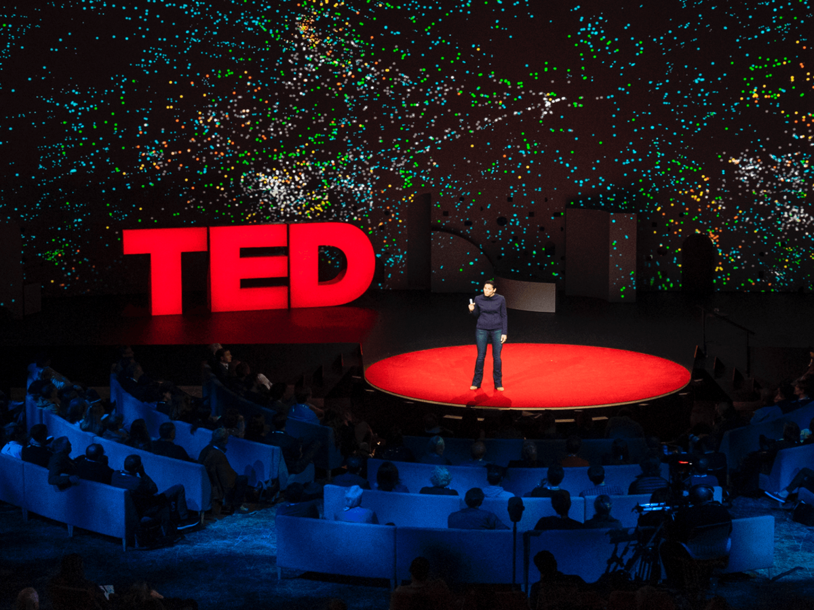

Below is a curated list of some of my favorite websites
All of these websites had some sort of value to my educational journey and just generally made me go "Wow!", I'm pleased to be able to share these with you all.
Ted

I have learned a great deal about the world by listening to talks about various topics and life from people with different stories than mine. Their educational content was also great, I use it as a role model when creating lessons that are easily digested but still dense with knowledge.
Below is a video of one of my favorite TED talks that I watched back in High School, which has continued to further my thinking and understanding of what being an educator means.
Discovery Education Blog
The discovery education blog is a treasure trove of resources for teachers, packed with engaging lessons, fresh ideas, and inspiring stories. It's a must-read for anyone who wants to make their classroom more dynamic and effective.
Busy Teacher
Busyteacher.org is a lifesaver for busy teachers, with a wealth of lesson plans, resources, and support at your fingertips. It's the perfect place to find inspiration and ideas to help create a classroom that's both engaging and productive.